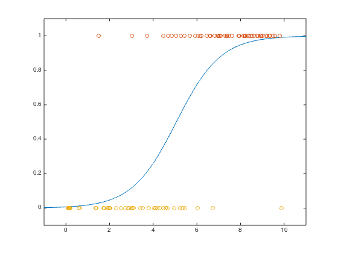

% Section 7.1.1 % Boyd & Vandenberghe, "Convex Optimization" % Kim & Mutapcic, "Logistic regression via geometric programming" % Written for CVX by Almir Mutapcic 02/08/06 % % Solves the logistic regression problem re-formulated as a GP. % The original log regression problem is: % % minimize sum_i(theta'*x_i) + sum_i( log(1 + exp(-theta'*x_i)) ) % % where x are explanatory variables and theta are model parameters. % The equivalent GP is obtained by the following change of variables: % z_i = exp(theta_i). The log regression problem is then a GP: % % minimize prod( prod(z_j^x_j) ) * (prod( 1 + prod(z_j^(-x_j)) )) % % with variables z and data x (explanatory variables). randn('state',0); rand('state',0); a = 1; b = -5; m = 100; u = 10*rand(m,1); y = (rand(m,1) < exp(a*u+b)./(1+exp(a*u+b))); % order the observation data ind_false = find( y == 0 ); ind_true = find( y == 1 ); % X is the sorted design matrix % first have true than false observations followed by the bias term X = [u(ind_true); u(ind_false)]; X = [X ones(size(u,1),1)]; [m,n] = size(X); q = length(ind_true); cvx_begin gp % optimization variables variables z(n) t(q) s(m) minimize( prod(t)*prod(s) ) subject to for k = 1:q prod( z.^(X(k,:)') ) <= t(k); end for k = 1:m 1 + prod( z.^(-X(k,:)') ) <= s(k); end cvx_end % retrieve the optimal values and plot the result theta = log(z); aml = -theta(1); bml = -theta(2); us = linspace(-1,11,1000)'; ps = exp(aml*us + bml)./(1+exp(aml*us+bml)); plot(us,ps,'-', u(ind_true),y(ind_true),'o', ... u(ind_false),y(ind_false),'o'); axis([-1, 11,-0.1,1.1]);
Successive approximation method to be employed. SDPT3 will be called several times to refine the solution. Original size: 1320 variables, 401 equality constraints 200 exponentials add 1600 variables, 1000 equality constraints ----------------------------------------------------------------- Cones | Errors | Mov/Act | Centering Exp cone Poly cone | Status --------+---------------------------------+--------- 200/200 | 5.422e+00 2.242e+00 0.000e+00 | Solved 200/200 | 5.049e-01 1.636e-02 0.000e+00 | Solved 194/199 | 2.442e-02 3.881e-05 0.000e+00 | Solved 0/146 | 3.805e-04 7.816e-09 0.000e+00 | Solved ----------------------------------------------------------------- Status: Solved Optimal value (cvx_optval): +2.10331e+14
